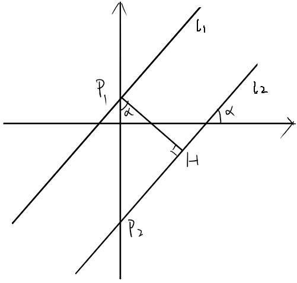
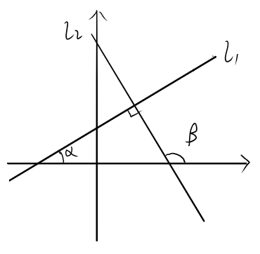
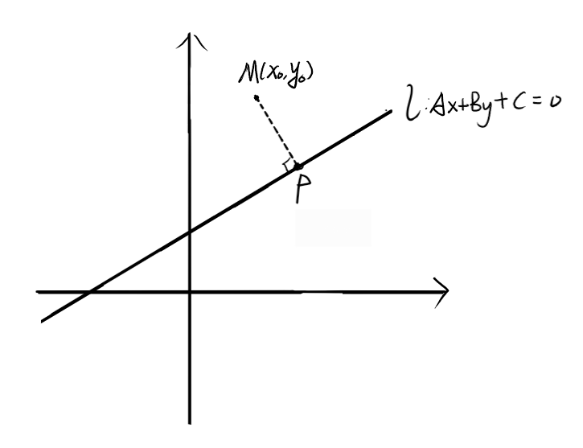
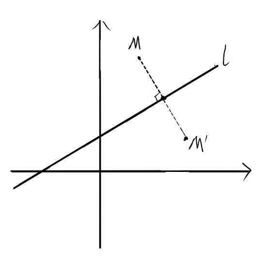

平面解析几何的学习笔记——坐标系与直线
直线解析几何
直线坐标系与上面的点
直线坐标系，实际上就是数轴。上面的每一个点与一个实数一一对应，故可以对应的实数表示该点。如图，为一个数轴，点 $A$ 的坐标表示为 $A(1)$，同理，有 $B(-2)$。
数轴上的向量——一维向量
数轴上从一个点指向另一个点的有向线段即为一维向量。从 $A$ 指向 $B$ 的向量记为向量 $\overrightarrow{AB}$。
一维向量坐标即为终点坐标减起点坐标（通过向量减法可得）。即设 $A(x_1)$，$B(x_2)$，则向量 $\overrightarrow{AB}$ 的坐标为 $x_2-x_1$。坐标可正可负可为零。
一维向量的模长与二维平面向量类似。设一维向量 $\boldsymbol{a}=(x_0)$，则它的模长 $|\boldsymbol{a}|=\sqrt{x_0^2}=|x_0|$。显然模长不可能为负数。
另外还有一个较为重要的公式——中点坐标公式。
如图，设 $P(x_1)$，$Q(x_2)$，且点 $R(x_0)$ 为 $PQ$ 线段的中点，可知 $|\overrightarrow{PR}|=|\overrightarrow{RQ}|$ ，则有 $x_0-x_1=x_2-x_0$，解得 $x_0={x_1+x_2 \over 2}$
平面直角坐标系上的距离公式与中点坐标公式
两点间距离公式
设点 $A(x_1,y_1)$，$B(x_2,y_2)$，则两点间距离，或者向量 $\overrightarrow{AB}$ 的模长为
至于证明，可在坐标系中作坐标轴的垂线，构造直角三角形，用勾股定理证明。
利用平面上两点距离公式，可求解一类函数的最值问题。如求 $y=\sqrt{x^2-2x+10}+\sqrt{x^2-8x+17}$ 的最小值，可以将其变形为
考虑距离公式，$y$ 可以看成动点 $A(x,0)$ 到点 $P(1,3)$ 与点 $Q(4,-1)$ 的距离和，这样，就将代数问题转化为几何问题。如图，显然 $A$ 在 $PQ$ 连线的位置是，距离和最小。代入就有 $y_{\min}=5$。
中点坐标公式
设点 $A(x_1,y_1)$，$B(x_2,y_2)$，以及线段 $AB$ 的中点 $C(x_0,y_0)$，可知
同样，作坐标轴的垂线，利用梯形中位线定理，可知中点的横纵坐标分别为两个坐标轴上的中点，再利用一维中点坐标公式即可（感觉可推广到 $n$ 维空间）。
直线的斜率与倾角
直线的倾斜角
平面直角坐标系中，一条直线的倾斜角定义为该直线与 $x$ 轴正半轴的夹角，简称为倾角。如图，$\angle\alpha$ 与 $\angle\beta$ 为对应直线的倾斜角。

因此，倾角的范围为 $[0,\pi)$ 的左闭右开区间。
直线的斜率
设直线 $l$ 的倾角为 $\alpha$，则定义直线的斜率 $k=\tan \alpha$。显然，当 $\alpha={\pi\over 2}$ 时，不存在 $\tan \alpha$，此时则称该直线斜率不存在。通过一些观察，可以知道直线 $y=kx+b$ 中的 $k$ 就是该直线的斜率。
现给定两点，如何求过这两点直线的斜率？设点 $A(x_1,y_1)$，$B(x_2,y_2)$，通过构造直角三角形，再利用相似，可以得到
这就是斜率公式。
直线方程的表示
直线的斜截式
定义直线与 $y$ 轴交点的纵坐标为该直线的截距。现在，尝试通过知道直线的截距与斜率，确定直线的方程。
如图，设直线斜率为 $k=\tan \alpha$，截距为 $b$，则与 $y$ 轴交于 $A(0,b)$。考虑直线上的一点 $M(x,y)$，则 $M$ 点满足斜率的表示，即
整理可得 $y=kx+b$。这就是直线的斜截式。其中 $k$ 为斜率，$b$ 为截距。
直线的点斜式
给定一个点 $A(x_0,y_0)$ 和斜率 $k$ ，确定该直线的方程。
与斜截式类似，考虑直线上的点 $M(x,y)$，则其必然满足斜率的表示，即
整理得到 $y-y_0=k(x-x_0)$。这就是直线的点斜式。
与斜截式对比，发现斜截式就是点斜式中的点 $A$ 为 $y$ 轴上的点的特殊情况。
由于点斜式与斜截式都有斜率的出现，所以这两种方程不能表示垂直于 $x$ 轴的直线，即斜率不存在的直线。
直线的两点式
给定两点 $A(x_1,y_1)$，$B(x_2,y_2)$，确定直线方程。
思想依旧是斜率的式子。对于该直线上的每一个点 $(x,y)$，必然满足斜率相等，即
整理一下，就得到直线的两点式方程，
分母显然不能为 $0$ ，故 $x_1\neq x_2$，$y_1\neq y_2$。
直线的截距式
给定直线的截距 $b$ 与零点 $a$，或者说两坐标轴的截距，确定直线方程。
即为两点式的特殊情况，取点为 $(0,b)$ 与 $(a,0)$ 并代入两点式，可得
这就是直线的截距式。
显然 $a,b\neq 0$。
直线的一般式
对于上述直线，显然都可以写成
的形式，而这就是直线的一般式。显然 $A,B$ 不同时为 $0$。
可以看出，当 $B\neq 0$ 时，直线存在斜率
此时存在 $y$ 轴截距
而当 $A\neq 0$ 时，存在 $x$ 轴截距
对于一条直线 $l:Ax+By+C=0$，在等式两边同时乘上不为 $0$ 的数，直线依然不变，所以一条直线有无数种一般式。
直线的平行关系
平行线的判定
若两条直线斜率都不存在，显然是平行的。若斜率存在，设两条直线分别为
又因为 $l_1//l_2$，所以 $x$ 轴的夹角相等，故斜率相等；又 $l_1,l_2$ 不为同一条直线，所以 $b_1\neq b_2$。
对于一般式，设两条直线分别为
将其变成斜截式，得到
再根据上述，得到
整理得到
若 $A_1,A_2,B_1,B_2,C_1,C_2$ 都不为 $0$，可以写成更好看的形式
平行线的距离
若两条直线平行，则一定可以将其一般式的 $A,B$ 变成一样。故设两条平行线分别为
$l_1$ 与 $l_2$ 的距离可以求得
证明的话，分两种种情况讨论。
1.$B\neq0$

如图，过 $P_1$ 作 $l_2$ 的垂线，交于 $H$。则
而
故
2.$B=0$，则 $A\neq 0$
此时从 $x$ 轴考虑，与上面类似。
直线的垂直关系
两条直线垂直，要么一条直线斜率存在，另一条直线斜率为 $0$，要么 $k_1k_2=-1$。
前者显然，一条垂直 $x$ 轴，一条垂直 $y$ 轴。
后者，如图，垂直时满足 $\beta=\alpha+\pi/2$，所以有
整理可得

对于一般式，同样是斜率互为「负倒数」，即
点到直线的距离公式
给定一个点 $M(x_0,y_0)$，则 $M$ 点到直线 $l:Ax+By+C=0$ 的距离为

如图，过点 $M$ 作 $MP⊥l$ 交于 $P$ 点。显然，若 $l$ 的斜率不存在，即 $B=0$，则
若 $l$ 斜率存在但为 $0$，即 $A=0$，则
若 $l$ 斜率存在且不为 $0$，则 $MP$ 的斜率
所以直线 $MP$ 的方程为
与 $l$ 联立求解，可解得
所以
直线的对称相关
点关于直线对称
如图，求点 $M$ 关于 $l$ 的对称点 $M’$。

把 $M’$ 点设出来。首先可以根据 $MM’$ 与 $l$ 垂直关系，斜率 「负倒数」，得到一个方程。再者，利用中点在 $l$ 上，可列出第二个方程，联立求解即可。
直线关于直线对称
由于两点确定一条直线，故在一条直线上找两个点，把这两个关于直线对称，得到的点再连成一条直线，则该直线就是原直线的对称直线。